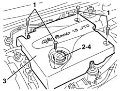
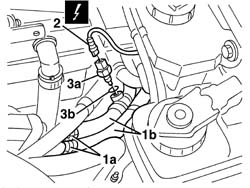

5020L44 temperature sensor for additional heater - r r
- Path
- Procedures > 50 AUXILIARY UNITS > 5020 HEATER > 5020L additional heater > 5020L44 temperature sensor for additional heater - r r
- Kind
- repair procedure (removal / refitting; the operation number is the code)
- Applies to
- engines: 1.9 JTD 8v , 2.4 JTD 10v; all production periods
- Interactive page
- https://sloeber94.github.io/elrnDB-a156/en/#/3238301
Applies to: all engines; all production periods
Applies to: engines: 1.9 JTD 8v , 2.4 JTD 10v; all production periods
 Removing
Removing
 Refitting
RefittingOpen the bonnet lid.
1. Undo the bolts fixing the bonnet lid.
2. Undo the engine oil filler plug.
3. Remove the bonnet lid.
4. Retighten the engine oil filler plug.

Applies to: engines: 1.9 JTD 8v , 2.4 JTD 10v; all production periods
Place a suitable container for collecting the coolant under the temperature sensor for the additional heater.
1. Release the band (1a) securing the heater coolant supply and return pipes (1b).
2. Disconnect the electrical connection for the sensor.
 | Name | Connector |
|---|---|---|
2 | Additional heater temperature sensor |
3. Undo the additional heater temperature sensor (3a) and drain the fluid. Recover the gasket (3b).

Applies to: engines: 1.9 JTD 8v , 2.4 JTD 10v; all production periods
Refitting
RemovingCheck that the additional heater temperature sensor is not damaged and, if necessary, conduct an electrical test.
Tighten the additional heater temperature sensor, complete with gasket.
Connect the sensor electrical connection.
Engage the band securing the water supply and return pipes to the passenger compartment heater.
Undo the engine oil filler plug.
Position the bonnet lid.
Tighten the engine oil filler plug.
Tighten the bolts fixing the bonnet lid.
Refill the engine cooling circuit using the recommended fluid.
 | Type | Component | Name | Qty. |
|---|---|---|---|---|
- | Fluid | ENGINE COOLING CIRCUIT | Alfa Romeo Climafluid Super Permanent - 40 °C | - |
Visually inspect that there are no leaks from the cooling circuit.
Check that the additional heating system is working properly.